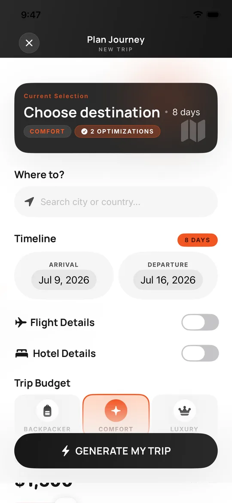
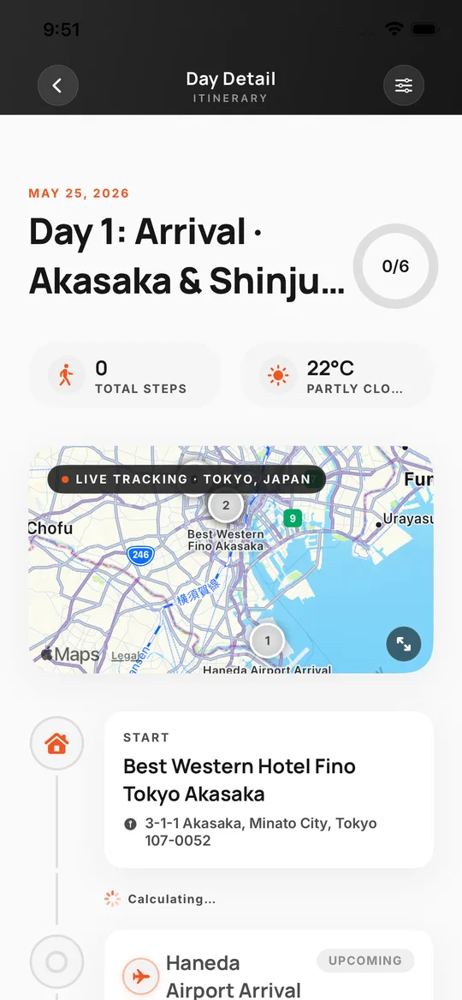
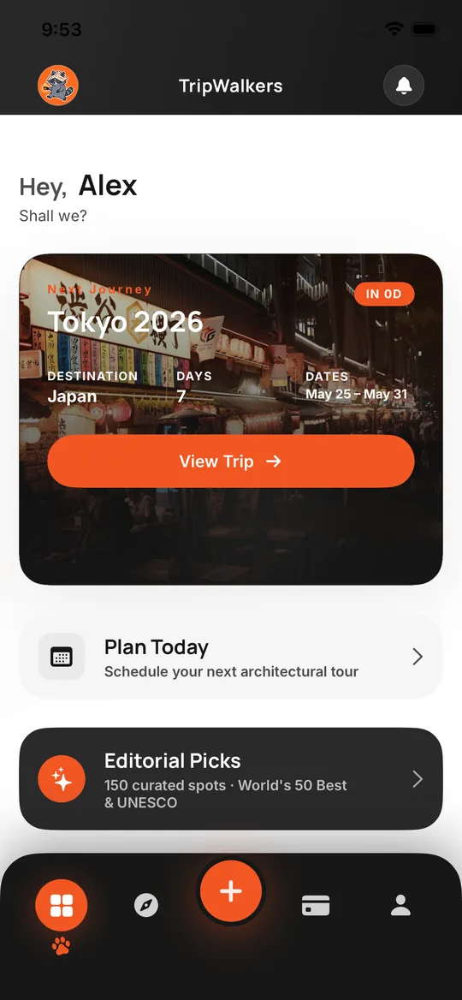
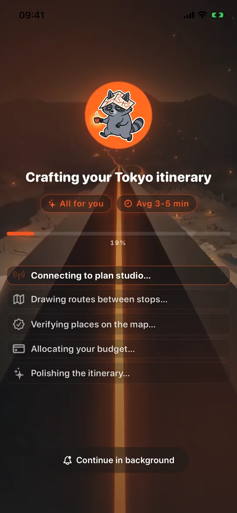
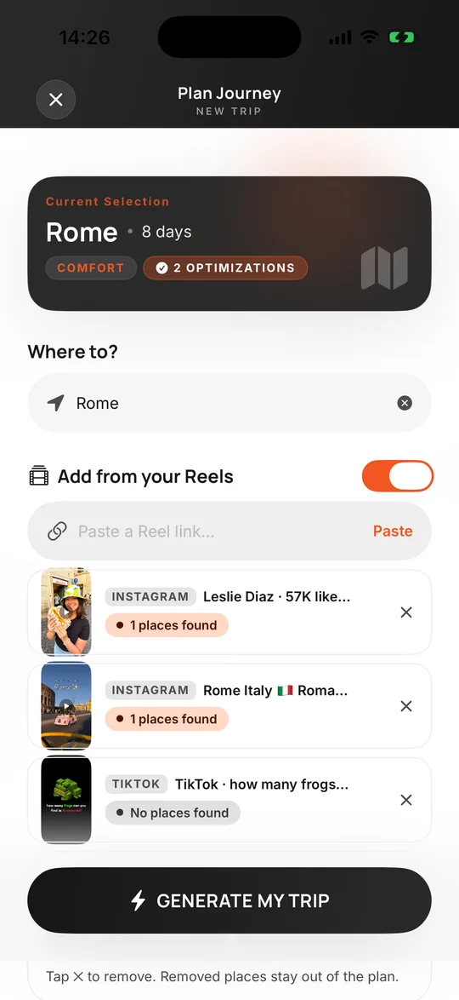
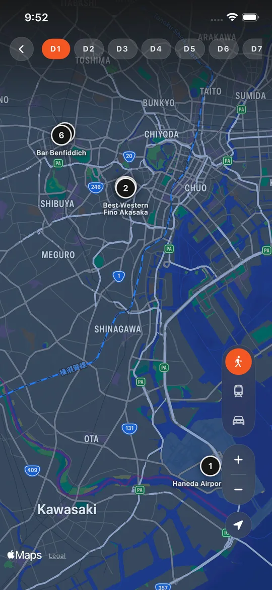
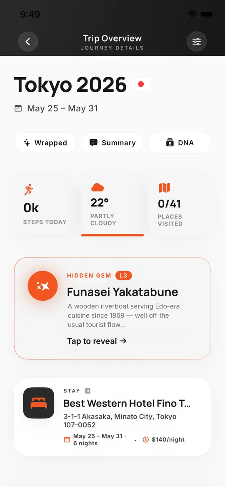

<title>TripWalkers</title>
<meta name="description" content="Pick a city and your dates. TripWalkers writes a day-by-day trip you can actually walk — on a map, with your friends.">
<link rel="preconnect" href="https://fonts.googleapis.com">
<link rel="preconnect" href="https://fonts.gstatic.com" crossorigin>
<link href="https://fonts.googleapis.com/css2?family=Instrument+Serif:ital@1&family=Manrope:wght@500;700;800&display=swap" rel="stylesheet">
<link rel="stylesheet" href="style.css">
<script>document.documentElement.classList.add('js')</script>

<nav class="nav" aria-label="Main">
  <a class="back" href="https://corvus-tech.co/en/work" aria-label="Back to all work"><svg viewBox="0 0 24 24" fill="none" stroke="currentColor" stroke-width="2.2" stroke-linecap="round" stroke-linejoin="round" aria-hidden="true"><path d="M15 5l-7 7 7 7"/></svg></a>
  <a class="brand" href="#top" aria-label="TripWalkers"><span>TripWalkers</span></a>
  <a class="l" href="#plan">Features</a>
  <a class="l" href="#backpack">Toolkit</a>
  <a class="l" href="#faq">FAQ</a>
  <a class="btn btn-white nav-cta" href="#get">Get the app</a>
</nav>

<main id="top">

<!-- ============ HERO ============ -->
<header class="hero">
  <div class="ghost" aria-hidden="true">WALK</div>
  <h1>
    <span class="mask"><span data-hero-line>Your trip, planned.</span></span>
    <span class="mask"><span class="serif" data-hero-line>Now go walk it.</span></span>
  </h1>
  <p class="lead" data-hero>Pick a city and your dates. TripWalkers writes a day-by-day plan you can actually walk: every stop on the map, every walk timed, your friends on the same page.</p>
  <div class="ctas" data-hero>
    <a class="btn btn-white magnetic" href="https://apps.apple.com/app/id6764424121"><svg viewBox="0 0 24 24" fill="currentColor" aria-hidden="true"><path d="M16.37 12.7c-.02-2.3 1.88-3.4 1.96-3.46-1.07-1.56-2.73-1.78-3.32-1.8-1.41-.14-2.76.83-3.48.83-.72 0-1.83-.81-3-.79-1.54.02-2.97.9-3.76 2.28-1.6 2.78-.41 6.9 1.15 9.16.76 1.1 1.67 2.34 2.86 2.3 1.15-.05 1.58-.74 2.97-.74 1.38 0 1.78.74 2.99.72 1.24-.02 2.02-1.12 2.77-2.23.87-1.28 1.23-2.52 1.25-2.58-.03-.01-2.4-.92-2.39-3.69zM14.1 5.94c.63-.77 1.06-1.83.94-2.9-.91.04-2.02.61-2.67 1.37-.58.67-1.1 1.76-.96 2.8 1.02.08 2.06-.52 2.69-1.27z"/></svg>Download on the App Store</a>
    <a class="btn btn-ghost" href="#pain">See the route ↓</a>
  </div>

  <div class="stage" aria-hidden="true">
    <div class="phone l" data-phone="l"></div>
    <div class="phone r" data-phone="r"></div>
    <div class="phone c" data-phone="c"></div>
    
    <div class="chip-float chip-a" data-chip><i></i>Day 3 · Shibuya <small>6 stops · 12 min walks</small></div>
    <div class="chip-float chip-b" data-chip><i></i>Hidden gem unlocked <small>Funasei Yakatabune</small></div>
  </div>
</header>

<div class="strip" aria-label="Popular cities">
  <div class="strip-track">
    <span>Rome</span><span>Paris</span><span>Tokyo</span><span>Istanbul</span><span>Barcelona</span><span>Lisbon</span><span>Amsterdam</span><span>London</span><span>Prague</span><span>Kyoto</span><span>New York</span><span>Seoul</span>
  </div>
</div>

<!-- ============ PAIN ============ -->
<section class="pain" id="pain" aria-labelledby="pain-h">
  <div class="grid">
    <div>
      <h2 id="pain-h" class="manifesto" data-manifesto>Booking. Skyscanner. Reddit. Pinterest. Thirty saved Reels. A spreadsheet nobody opens. <span class="hot">The planning is the nightmare</span> — not the trip.</h2>
      <div class="verdict">
        <strong>6 tabs.<br><span>0 plans.</span></strong>
        <p>Our raccoon has been there. So he learned to do the planning for you — and you get to do the walking.</p>
      </div>
    </div>
    <div class="desk" aria-hidden="true">
      <div class="tab" data-tab style="left:2%;top:6%"><b style="background:#003b95">B</b>Booking.com <em>✕</em></div>
      <div class="tab" data-tab style="right:0;top:14%"><b style="background:#0062e3">S</b>Skyscanner <em>✕</em></div>
      <div class="tab" data-tab style="left:12%;top:24%"><b style="background:#ff4500">r</b>r/travel · 2 days in Rome? <em>✕</em></div>
      <div class="tab" data-tab style="right:6%;top:33%"><b style="background:#e60023">P</b>Pinterest <em>✕</em></div>
      <div class="tab" data-tab style="left:0;top:42%"><b style="background:#34a853">M</b>Maps · 41 saved <em>✕</em></div>
      <div class="tab" data-tab style="right:2%;top:50%"><b style="background:#c13584">◎</b>Saved Reels (30) <em>✕</em></div>
      
    </div>
  </div>
</section>

<!-- ============ THE ROUTE ============ -->
<div class="route-wrap" data-route>
  <svg class="route" aria-hidden="true"><path class="route-base"/><path class="route-line"/></svg>
  <div class="walker" aria-hidden="true"><div class="shadow"></div><div class="body"></div></div>

  <div style="display:grid;place-items:center;padding-top:30px;gap:84px">
    <p class="eyebrow" style="color:var(--fg-2)">Start walking. Scroll ↓</p>
    <span class="node start" data-node aria-hidden="true"></span>
      </div>

  <!-- 01 PLAN -->
  <section class="stop" id="plan" style="--glow: rgba(242,86,35,.34)">
    <span class="node seam" data-node aria-hidden="true">01</span>
    <div class="row">
      <div class="copy">
        <div class="tag"><span class="eyebrow">01 · Plan</span></div>
        <h2 data-reveal>Six questions.<br><span class="serif">Every day, sorted.</span></h2>
        <p class="lead" data-reveal>Where, when, who's coming, what kind of trip, what you love, and whether you've booked a flight or hotel. A few minutes later every day is laid out: sights, food, and the walk between them.</p>
        <ul class="facts" data-reveal><li>1–14 days</li><li>Solo · couple · friends · family</li><li>Backpacker · comfort · luxury</li><li>6 travel styles</li></ul>
      </div>
      <div class="visual" data-par>
        <div class="phone back"></div>
        <div class="phone front"></div>
      </div>
    </div>
  </section>

  <!-- 02 REELS -->
  <section class="stop alt" id="reels" style="--glow: rgba(193,53,132,.30)">
    <span class="node seam" data-node aria-hidden="true">02</span>
    <div class="row">
      <div class="copy">
        <div class="tag"><span class="eyebrow">02 · Reels → Plan</span></div>
        <h2 data-reveal>Saved a Reel?<br><span class="serif">Now it's a stop.</span></h2>
        <p class="lead" data-reveal>Paste an Instagram or TikTok link. TripWalkers reads the caption and cover, finds the places, and makes them must-visits in your plan. Those 30 saved Reels finally go somewhere.</p>
        <ul class="facts" data-reveal><li>Instagram</li><li>TikTok</li><li>Up to 10 per trip</li></ul>
      </div>
      <div class="visual" data-reels>
        <div class="phone"></div>
        <div class="reel reel-1" data-reel><span class="src">instagram.com/reel/…</span><span class="pin">Trastevere · found</span></div>
        <div class="reel reel-2" data-reel><span class="src">tiktok.com/@…/video</span><span class="pin">Gion at dusk · found</span></div>
        <div class="reel reel-3" data-reel><span class="src">instagram.com/reel/…</span><span class="pin">Time Out Market · found</span></div>
      </div>
    </div>
  </section>

  <!-- 03 ROUTE -->
  <section class="stop" id="route" style="--glow: rgba(70,130,220,.30)">
    <span class="node seam" data-node aria-hidden="true">03</span>
    <div class="row">
      <div class="copy">
        <div class="tag"><span class="eyebrow">03 · Day by day</span></div>
        <h2 data-reveal>Every day is a route,<br><span class="serif">not a list.</span></h2>
        <p class="lead" data-reveal>Stops in walking order with the minutes between them, all on one map. Drag a stop to reorder, tap “Optimize route”, peek around in 360°, or open it in Google Maps when you're there.</p>
        <ul class="facts" data-reveal><li>Walk times</li><li>Drag &amp; drop</li><li>Optimize route</li><li>360° Look Around</li></ul>
      </div>
      <div class="visual" data-par>
        <div class="phone back"></div>
        <div class="phone front"></div>
      </div>
    </div>
  </section>

  <!-- 04 GEMS -->
  <section class="stop alt" id="gems" style="--glow: rgba(242,86,35,.30)">
    <span class="node seam" data-node aria-hidden="true">04</span>
    <div class="row">
      <div class="copy">
        <div class="tag"><span class="eyebrow">04 · Hidden gems</span></div>
        <h2 data-reveal>The places locals<br><span class="serif">keep to themselves.</span></h2>
        <p class="lead" data-reveal>Every plan hides a few gems. Tap to reveal why they're special and how to get in. Want the famous ones too? Add any of 150 hand-picked spots from World's 50 Best and UNESCO lists straight into a day.</p>
        <ul class="facts" data-reveal><li>50 Best Restaurants</li><li>50 Best Bars</li><li>50 UNESCO icons</li></ul>
      </div>
      <div class="visual" data-par>
        <div class="phone"></div>
        <div class="gem" data-gem>
          <span class="k">✦ HIDDEN GEM</span>
          <p class="gt">Funasei Yakatabune</p>
          <p>A wooden riverboat serving Edo-era cuisine since 1869 — well off the usual tourist flow.</p>
          <div class="veil">Tap to reveal →</div>
        </div>
      </div>
    </div>
  </section>

  <!-- 05 WALK -->
  <section class="stop" id="walk" style="--glow: rgba(90,180,120,.28)">
    <span class="node seam" data-node aria-hidden="true">05</span>
    <div class="row">
      <div class="copy">
        <div class="tag"><span class="eyebrow">05 · Walk</span></div>
        <h2 data-reveal>We count the steps.<br><span class="serif">You count the views.</span></h2>
        <p class="lead" data-reveal>Connect Apple Health and every day shows your steps, distance and daily goal, right next to the weather, your wallet and the countdown to take-off.</p>
        <ul class="facts" data-reveal><li>Apple Health</li><li>Daily goal</li><li>Weekly movement</li></ul>
      </div>
      <div class="visual" data-par>
        <div class="phone"></div>
        <div class="chip-float" style="left:2%;top:22%" data-pop><i></i><span><span data-count="12480">12,480</span> steps</span> <small>goal met</small></div>
        <div class="chip-float" style="right:0;bottom:24%" data-pop><i style="background:#5ab478;box-shadow:0 0 0 4px rgba(90,180,120,.25)"></i><span data-count="8.6" data-dec="1">8.6</span>&nbsp;km <small>today</small></div>
      </div>
    </div>
  </section>

  <!-- 06 TOGETHER -->
  <section class="stop alt" id="together" style="--glow: rgba(160,110,240,.28)">
    <span class="node seam" data-node aria-hidden="true">06</span>
    <div class="row">
      <div class="copy">
        <div class="tag"><span class="eyebrow">06 · Together</span></div>
        <h2 data-reveal>One plan.<br><span class="serif">The whole crew.</span></h2>
        <p class="lead" data-reveal>Send an invite code and up to four people share the same plan. Owners decide who can edit, everyone sees the changes, and check-ins land in one group stream. No more “wait, which version?”</p>
        <ul class="facts" data-reveal><li>Free to share</li><li>Up to 4 people</li><li>Editor &amp; viewer roles</li></ul>
      </div>
      <div class="visual" data-par>
        <div class="phone"></div>
        <div class="crew" aria-hidden="true">
          <div class="p" data-pop><b style="background:#f25623">E</b>Elif <small>owner</small></div>
          <div class="p" data-pop><b style="background:#6d5ce8">A</b>Alex checked in <small>Meiji Jingu</small></div>
          <div class="p" data-pop><b style="background:#2f9e74">M</b>Mert added a photo</div>
          <div class="p" data-pop><b style="background:#d9a21b">D</b>Deniz joined <small>viewer</small></div>
        </div>
      </div>
    </div>
  </section>

  <!-- 07 WRAPPED -->
  <section class="stop" id="wrapped" style="--glow: rgba(242,86,35,.40)">
    <span class="node seam" data-node aria-hidden="true">07</span>
    <div class="row">
      <div class="copy">
        <div class="tag"><span class="eyebrow">07 · Wrapped</span></div>
        <h2 data-reveal>Come home<br><span class="serif">with the story.</span></h2>
        <p class="lead" data-reveal>Every trip ends with a shareable Wrapped: total steps, your longest walking day, the stops everyone talked about. Plus your Travel DNA: Urban Wanderer, Heritage Hunter, Street Food Addict…</p>
        <ul class="facts" data-reveal><li>Trip Wrapped</li><li>Travel DNA</li><li>One-tap share</li></ul>
      </div>
      <div class="visual" data-par>
        <div class="wrapped" data-wrapped>
          <span class="t">TRIPWALKERS · WRAPPED</span>
          <p class="wt">Tokyo<span class="serif">in 7 days.</span></p>
          
          <div class="stats">
            <div><strong data-count="84210">84,210</strong><small>total steps</small></div>
            <div><strong data-count="23">23</strong><small>stops visited</small></div>
            <div><strong data-count="18.4" data-dec="1">18.4</strong><small>km longest day</small></div>
            <div><strong>Urban</strong><small>Wanderer DNA</small></div>
          </div>
        </div>
      </div>
    </div>
    <span class="node seam-end" data-node aria-hidden="true"></span>
  </section>

  <div style="position:relative;height:1px"><span class="node gut" data-node aria-hidden="true" style="top:320px"></span></div>
  <!-- TOOLKIT -->
  <section class="pricing" id="backpack" style="padding-bottom:40px">
    <h2 data-reveal>Everything else<br><span class="serif">a trip needs.</span></h2>
    <div class="plans">
      <article class="plan" data-reveal><p class="k">Budget</p><h3 style="font-size:1.4rem;letter-spacing:-.03em;margin-top:10px">Spend tracker + live currency</h3><p class="sub" style="margin-top:8px">Food, transport, shopping, per day, with a heads-up before you overspend.</p></article>
      <article class="plan" data-reveal><p class="k">Packing</p><h3 style="font-size:1.4rem;letter-spacing:-.03em;margin-top:10px">A packing list that fills itself</h3><p class="sub" style="margin-top:8px">Items from your plan land there automatically. Passport, adapter, eSIM: covered.</p></article>
      <article class="plan" data-reveal><p class="k">Reminders</p><h3 style="font-size:1.4rem;letter-spacing:-.03em;margin-top:10px">Countdown &amp; passport nudges</h3><p class="sub" style="margin-top:8px">“3 days to Rome ✈️”, passport checks at 48h, 24h and 3h, tomorrow's preview.</p></article>
      <article class="plan" data-reveal><p class="k">Family</p><h3 style="font-size:1.4rem;letter-spacing:-.03em;margin-top:10px">“Call mom” in one tap</h3><p class="sub" style="margin-top:8px">Ready-made “I'm fine, having fun” messages for the people back home.</p></article>
      <article class="plan" data-reveal><p class="k">Edit</p><h3 style="font-size:1.4rem;letter-spacing:-.03em;margin-top:10px">Change a day, keep the trip</h3><p class="sub" style="margin-top:8px">Regenerate one day or fix one stop. The raccoon is thinking…</p></article>
      <article class="plan" data-reveal><p class="k">Language</p><h3 style="font-size:1.4rem;letter-spacing:-.03em;margin-top:10px">English &amp; Turkish</h3><p class="sub" style="margin-top:8px">The app and your plans, in the language you think in.</p></article>
    </div>
  </section>

  <!-- NUMBERS -->
  <section class="numbers" aria-label="TripWalkers in numbers">
    <div class="cols">
      <div><strong data-count="150">150</strong><small>hand-picked spots</small></div>
      <div><strong data-count="14">14</strong><small>days per plan, max</small></div>
      <div><strong data-count="10">10</strong><small>Reels per trip, turned into stops</small></div>
      <div><strong data-count="4">4</strong><small>people on one plan</small></div>
    </div>
  </section>

  <!-- FAQ -->
  <section class="faq" id="faq">
    <h2 data-reveal>Questions,<br><span class="serif">answered.</span></h2>
    <details><summary>How long does a plan take?</summary><p>Usually a few minutes. The app checks every place on the map and draws the walks between them. Keep using your phone; it finishes in the background and tells you when it's ready.</p></details>
    <details><summary>Do I need an account?</summary><p>No. You can plan without signing up. Sign in with Apple is only needed when you share a trip with friends.</p></details>
    <details><summary>Can I change the plan?</summary><p>Yes. Drag stops around, add your own, optimize the route, or regenerate a single day without touching the rest.</p></details>
    <details><summary>Which cities work?</summary><p>Pretty much anywhere with streets worth walking, from Rome and Tokyo to the small town your friend keeps talking about.</p></details>
    <details><summary>Is there an Android app?</summary><p>Not yet. TripWalkers is on iPhone today.</p></details>
  </section>

  <div style="position:relative;height:1px"><span class="node gut" data-node aria-hidden="true" style="top:0"></span></div>
  <!-- FINALE -->
  <section class="finale" id="get">
    <div class="flag"><span class="node finish" data-node aria-hidden="true"></span></div>
    <h2 data-reveal>Got a city<span class="serif">in mind?</span></h2>
    <p data-reveal>Pick a city. The raccoon is already lacing up.</p>
    <a class="btn btn-ember magnetic" href="https://apps.apple.com/app/id6764424121" data-reveal><svg viewBox="0 0 24 24" fill="currentColor" aria-hidden="true"><path d="M16.37 12.7c-.02-2.3 1.88-3.4 1.96-3.46-1.07-1.56-2.73-1.78-3.32-1.8-1.41-.14-2.76.83-3.48.83-.72 0-1.83-.81-3-.79-1.54.02-2.97.9-3.76 2.28-1.6 2.78-.41 6.9 1.15 9.16.76 1.1 1.67 2.34 2.86 2.3 1.15-.05 1.58-.74 2.97-.74 1.38 0 1.78.74 2.99.72 1.24-.02 2.02-1.12 2.77-2.23.87-1.28 1.23-2.52 1.25-2.58-.03-.01-2.4-.92-2.39-3.69zM14.1 5.94c.63-.77 1.06-1.83.94-2.9-.91.04-2.02.61-2.67 1.37-.58.67-1.1 1.76-.96 2.8 1.02.08 2.06-.52 2.69-1.27z"/></svg>Download on the App Store</a>
  </section>
</div>

</main>

<footer>
  <span>© 2026 TripWalkers · made by <a href="https://corvus-tech.co/en">Corvus Tech</a> · <a href="https://corvus-tech.co/en/work">More work</a></span>
  <span><a href="https://ekremmertu.github.io/tripwalkers-legal/privacy.html">Privacy</a> · <a href="https://www.apple.com/legal/internet-services/itunes/dev/stdeula/">Terms</a> · <a href="https://corvus-tech.co/tr/work/tripwalkers">Türkçe</a></span>
</footer>

<script src="https://cdnjs.cloudflare.com/ajax/libs/gsap/3.12.5/gsap.min.js"></script>
<script src="https://cdnjs.cloudflare.com/ajax/libs/gsap/3.12.5/ScrollTrigger.min.js"></script>
<script src="https://unpkg.com/lenis@1.1.13/dist/lenis.min.js"></script>
<script src="route.js"></script>
<script src="main.js"></script>
